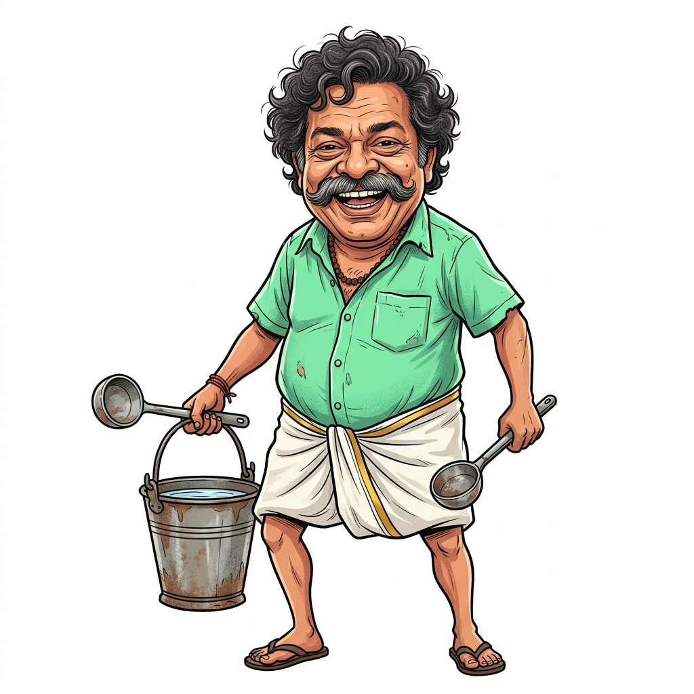

👉 "പൊഞ്ചിക്കര നിങ്ങളുടെ അടുത്ത കറി എവിടെ വിളമ്പണം എന്ന് തീരുമാനിക്കാൻ വാഴയിലയിൽ എവിടെ വേണമെങ്കിലും ക്ലിക്ക് ചെയ്യൂ!"
Click anywhere on the banana leaf to choose where Ponjikkara should serve your next dish!
👑 മഹാബലി തമ്പുരാൻ
"പൊഞ്ചിക്കര വിളമ്പുന്ന തനത് സദ്യ കഴിക്കാൻ തമ്പുരാൻ ആവേശത്തോടെ കാത്തിരിക്കുന്നു!" 😋
💬 "ചേട്ടാ ലേശം കറി കോരി ഒഴിക്കട്ടെ?" 🍲

👨🍳 പൊഞ്ചിക്കര കേശവൻ"കഴിക്കുന്ന ആൾ എവിടെ പറഞ്ഞാലും കറി വിളമ്പുന്നത് പൊഞ്ചിക്കരയുടെ സ്വന്തം ഇഷ്ടത്തിനാണ്!" 😜